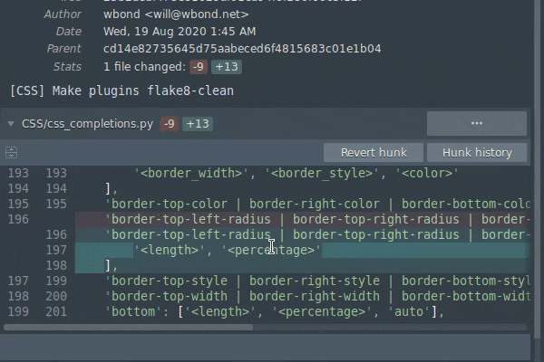

Documentation Diff Context
Reviewing changes is easy in Sublime Merge.
Changes are shown in a condensed view by default, similar to git diff.
Sometimes you need to see more context around a change in order to understand it. Sublime Merge offers two ways to view more context:
Context Dragging
You can click and drag the top or bottom edge of a diff to add and remove context. Double clicking this edge will increase the context by a few lines.
Context Dragging
Full File Context
When reviewing larger changes, it becomes important to see the full file. You can seamlessly toggle between individual changes and the full file context using the full file context toggle.
When hovering over the hunk header, you'll notice the full file context toggle button on the left of the header. You can toggle between the full file context and individual changes by clicking this button.
Full File Context